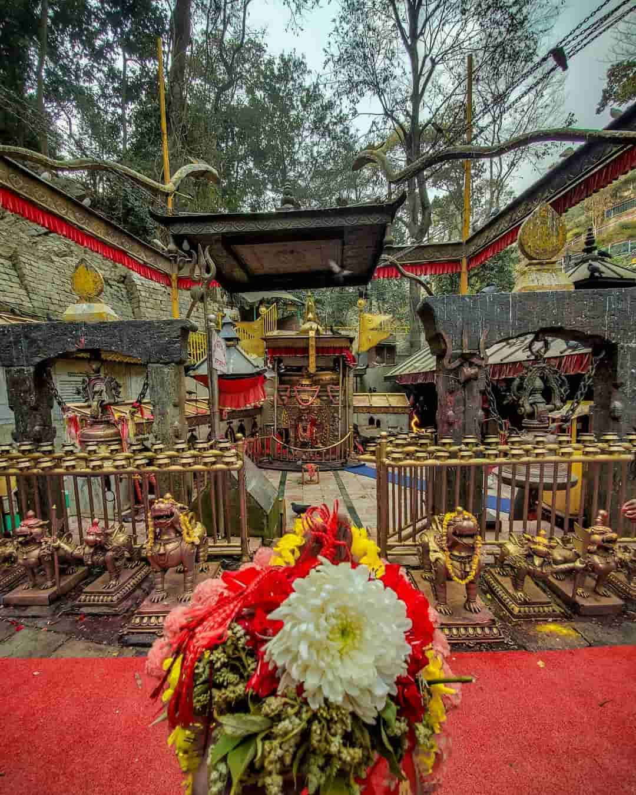
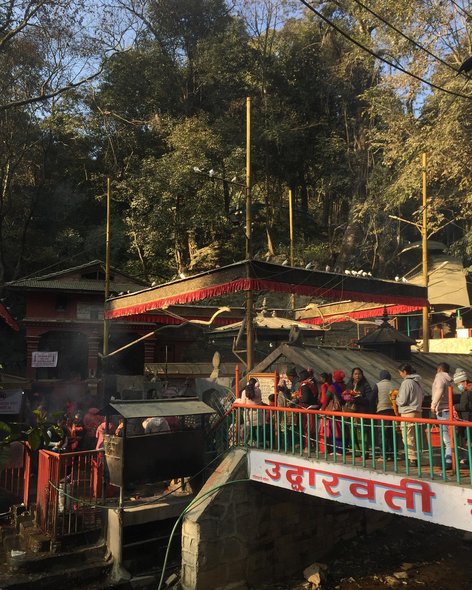
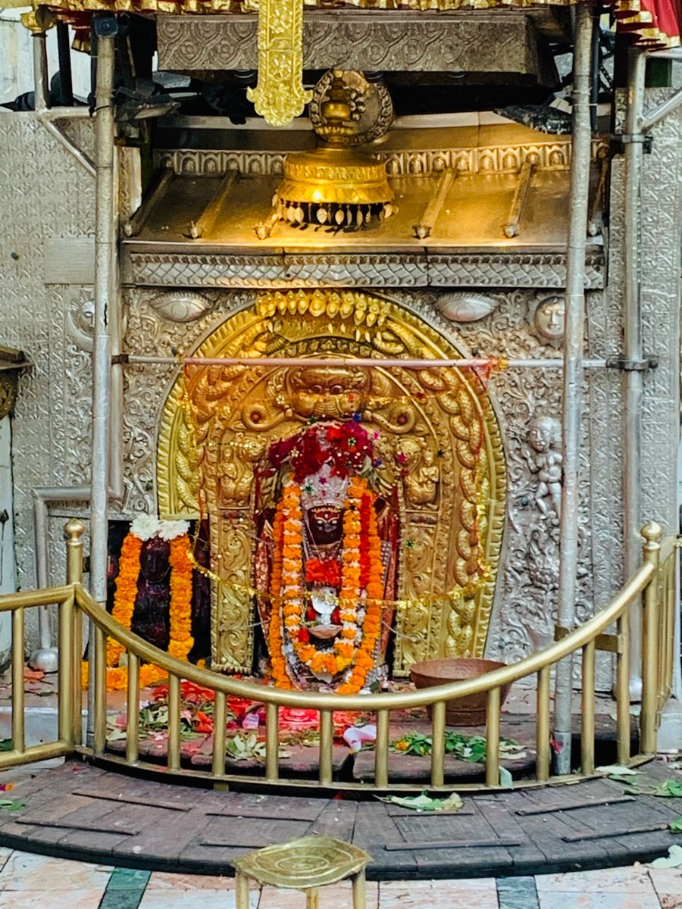
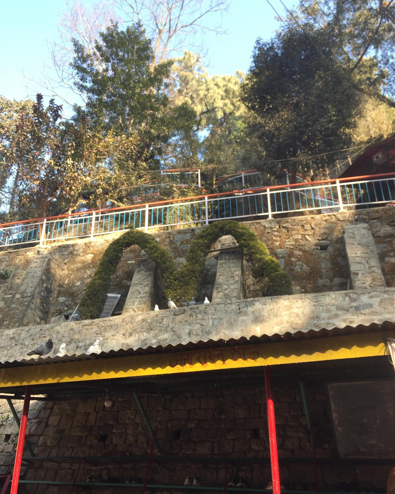
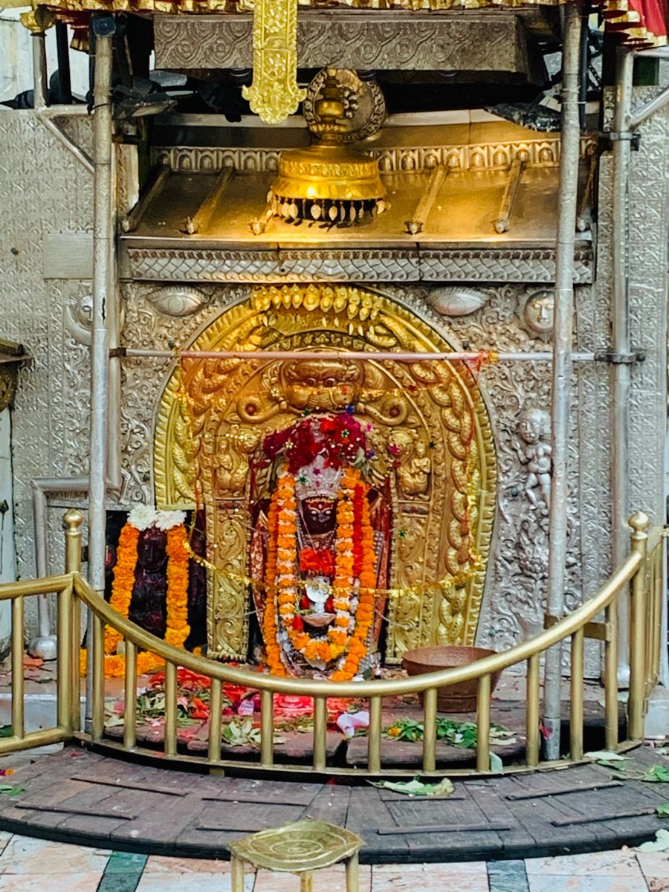
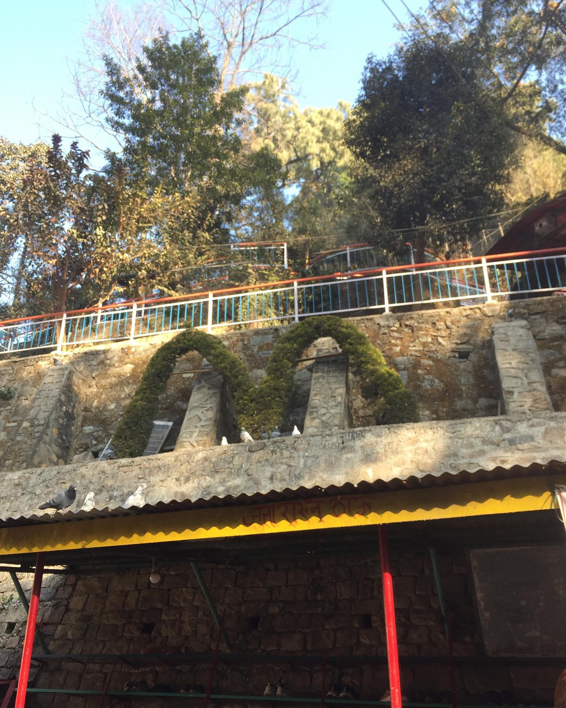

Dakshinkali Temple

Dakshinkali, located about 22 kilometers south of Kathmandu, is a significant heritage site and a popular
pilgrimage destination in the Kathmandu Valley. It is renowned for the Dakshinkali Temple, dedicated to the
goddess Kali, a fierce form of the Hindu goddess Durga.

The Dakshinkali Temple holds immense religious and cultural significance for devotees and attracts a large
number of worshippers, especially on Tuesdays and Saturdays. The temple is set amidst a serene and
picturesque natural landscape, surrounded by lush green hills.
The main deity of the temple, Goddess Kali, is worshipped as the destroyer of evil forces. The temple
complex is adorned with various statues and idols of Hindu gods and goddesses, including Lord Shiva and
Ganesh. The main idol of Kali is black in color and is depicted with multiple arms, each holding a symbolic
weapon.
Devotees visit the temple to offer sacrifices to the goddess as an act of devotion and to seek blessings for
their well-being and prosperity. Animal sacrifices, mainly of goats and chickens, are made to honor the
goddess. The temple complex comes alive with vibrant rituals, prayers, and the sound of bells and drums.

 



Dakshinkali is not only a place of religious devotion but also a cultural and historical site. It is
believed to have been in existence since ancient times and holds a place in the folklore and mythology of
Nepal. The temple's architecture reflects the traditional Newari style, with its distinctive pagoda-like
structure and intricately carved woodwork.
Visiting Dakshinkali provides a unique opportunity to witness the blend of religious fervor, cultural
traditions, and natural beauty. It offers a glimpse into the deep-rooted faith and rituals of the local
community and showcases the diversity of religious practices in Nepal.